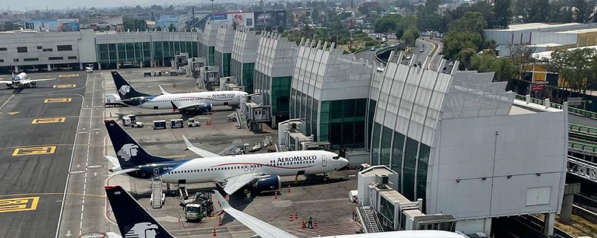
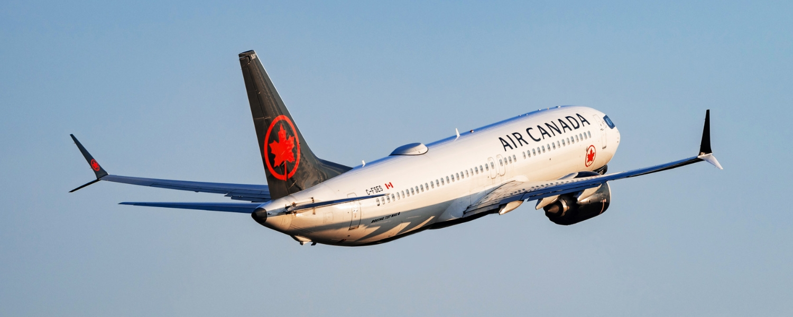
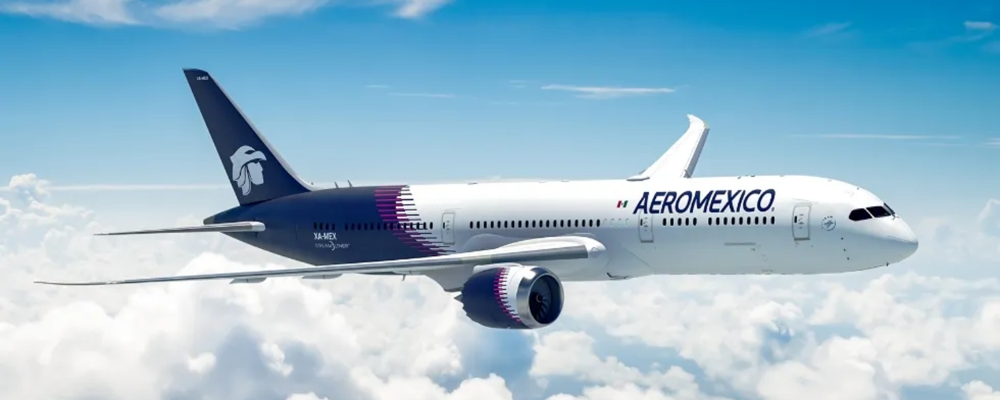
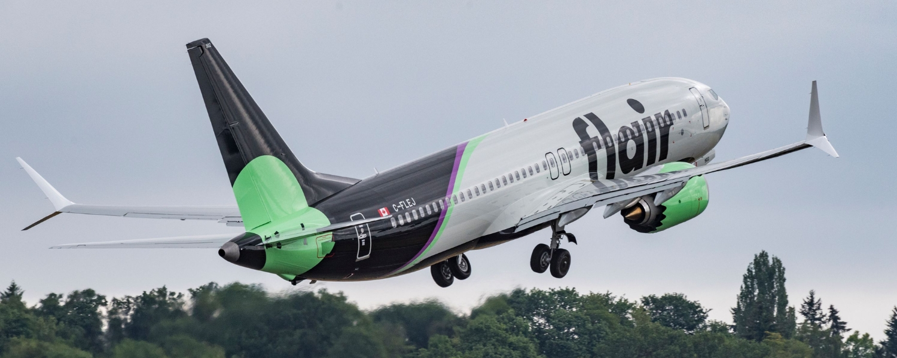
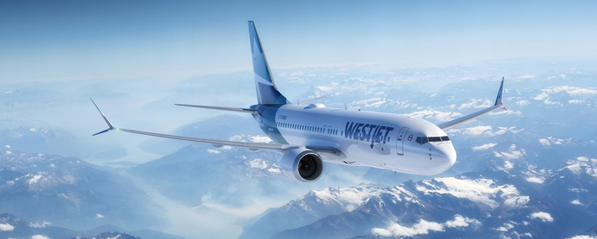
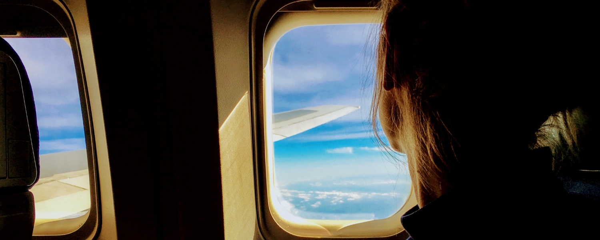

August 18, 2026
General TravelHow to Get to Mexico City from Canada: Every Route Explained
Mexico City is having a real moment with Canadian travellers, and it is not hard to see why. The food scene is one of the best on the planet, the history runs deep, neighbourhoods like Roma Norte and Condesa are endlessly walkable, and your Canadian dollar stretches a long way once you land. It is a big, buzzing, high-altitude capital that rewards anyone willing to explore it.
Here is the good news if that pull sounds familiar: it is easier to fly nonstop to Mexico City from Canada than it has ever been. Four airlines now connect four Canadian cities directly to the Mexican capital, from full-service flag carriers with comfortable two-cabin jets to an ultra-low-cost option for travellers watching every dollar.
The catch is that the best way to get there depends on where you are starting from. Toronto and Vancouver travellers have three airlines to choose from, Montreal has two, and Calgary has one, so your options, your schedule, and even your points strategy will look different depending on your home airport.
Here is your complete guide to flying from Canada to Mexico City.
Where You Fly Into

Source: FlyUSA.
Every nonstop flight from Canada lands at Mexico City International Airport (MEX), officially named Benito Juárez International Airport. It is one of the busiest airports in Latin America, and it sits surprisingly close to the action, only about 5 kilometres from the historic centre as the crow flies, or roughly 8 kilometres by road, in the Venustiano Carranza borough on the east side of the city.
That proximity is a real perk. Depending on traffic, you can be in the historic centre in about 20 minutes, though the same trip can stretch toward an hour at peak times. Roma Norte sits around 14 kilometres away and Polanco around 16 kilometres, so your ride time will depend a lot on where you are staying.
The airport has two terminals, T1 and T2, and covers the usual big-airport essentials: duty-free shopping, plenty of dining, VIP lounges, car rental desks, luggage storage, and free Wi-Fi throughout. Which terminal you arrive at depends on your airline: Air Canada, Flair, and WestJet all use Terminal 1, while Aeroméxico flies into Terminal 2. It is worth knowing before you land, since the two terminals are a fair distance apart and connected by an inter-terminal train.
One quick note to avoid confusion. Mexico City has a second airport, Felipe Ángeles International (AIFA), which sits well to the north of the city and is used mainly by some domestic and budget carriers. None of the nonstop flights from Canada use it, so if you are flying in from Toronto, Vancouver, Montreal, or Calgary, MEX is where you will land.
Getting From the Airport Into the City
One of the best things about landing at MEX is how easy and affordable it is to reach the city, whatever your budget. You have four main options, ranging from a metro ride that costs less than a coffee to a door-to-door rideshare.
Before you pick, one tip: fares here are set in Mexican pesos, so the Canadian dollar amounts below will shift slightly with the exchange rate. They are close approximations to help you plan.
| Option | Approx. cost | Where to catch it |
|---|---|---|
| Metro (Line 5) | Around $0.45 CAD | Terminal Aérea station, by T1 |
| Metrobus (Line 4) | $2 to $3 CAD | Stops outside T1 and T2 |
| Official taxi | $18 to $28 CAD | Transporte Terrestre kiosk, arrivals |
| Uber | $14 to $31 CAD | Via the app |
Metro (Line 5). The cheapest way into the city by a wide margin. Line 5 runs from the Terminal Aérea station, a short walk from Terminal 1, and a single fare costs just a few pesos. It is fast and reliable, but the cars get crowded and there is little room for luggage, so it suits light packers more than anyone hauling large suitcases. Service does not run overnight. If you are flying Aeroméxico into Terminal 2, note that the metro station sits by Terminal 1, so you will take the inter-terminal train over first.
Metrobus (Line 4). A dedicated airport bus route that stops right outside both terminals and runs into the historic centre in around 30 minutes. You will need a rechargeable smartcard, which you can buy from the machines at the station, since you cannot pay with cash onboard. Like the metro, it is budget-friendly but tight on luggage space and does not operate 24 hours.
Official taxi. The classic stress-free choice, available 24 hours a day outside both terminals. Buy a fixed-price ticket at the Transporte Terrestre kiosk inside arrivals, then hand it to your driver at the official stand. Sticking to the marked official taxis is the safe move, and the fixed fare means no surprises. The trip into the centre takes about 20 minutes in normal traffic.
Uber. Rideshare works well in Mexico City and is often the cheapest door-to-door option, with the fare locked in before you travel. Pickup logistics at the airport can be a little fiddly, and you will need mobile data to book, so a local eSIM helps. Worth knowing: during busy periods, surge pricing can push an Uber above the fixed taxi fare, so it is worth comparing both when you land.
One more note for solo travellers: Mexico City runs dedicated women-only metro cars and women-only taxis, which many solo female travellers find reassuring, especially late at night.
Air Canada Flights to Mexico City

Source: Air Canada.
Air Canada offers the broadest Canadian network to Mexico City, with nonstop service from Toronto, Vancouver, and Montreal. As Canada's flag carrier and a Star Alliance member, it is also the natural pick if you collect Aeroplan and want to earn or redeem on the way down. All three routes are flown on the Boeing 737 MAX 8, arriving at Terminal 1.
Toronto to Mexico City
Daily, and in fact twice daily, year-round on the Boeing 737 MAX 8. Toronto is the best-served city on this whole map, with two Air Canada departures a day on top of the other carriers, so it offers the most flexibility if your plans change.
Vancouver to Mexico City
Daily, year-round on the Boeing 737 MAX 8, giving West Coast travellers a dependable once-a-day link to the Mexican capital.
Montreal to Mexico City
Daily and year-round on the Boeing 737 MAX 8, with one seasonal quirk worth noting. There are no flights from October 1 to 24, 2026, and in the final week of September the route runs only on September 28 and 30. Outside that autumn gap, it is a reliable daily option for Quebec travellers who would rather not backtrack through Toronto.
On these routes Air Canada flies a two-cabin 737 MAX 8. Business class is a wider 2-2 recliner seat with priority services and Aeroplan earning, a comfortable step up for a flight of around five hours, while economy is a standard 3-3 layout with the usual snacks, drinks, and seatback or streaming entertainment.
Boeing 737 MAX 8
| Cabin | Layout |
|---|---|
| Business | 2-2 |
| Economy | 3-3 |
Booking with Aeroplan: You can book Air Canada's own flights to Mexico City with Aeroplan points. Air Canada uses dynamic pricing on its own metal, so the exact number moves around with demand and how far ahead you book, but its published Flight Rewards Chart gives you a solid sense of what to expect. Toronto, Vancouver, and Montreal to Mexico City all fall in the 1,501 to 2,750 mile band for travel within North America:
| Cabin | Starts at | Median |
|---|---|---|
| Economy | 12,500 points | 15,900 points |
| Business | 25,000 points | 44,400 points |
Aeroméxico Flights to Mexico City

Source: SkyTeam.
Aeroméxico is Mexico's flag carrier, and with its main hub right at MEX, it makes a natural choice for a nonstop from Canada. It matches Air Canada city for city on the eastern and western routes, flying from Toronto, Vancouver, and Montreal, all on the Boeing 737 MAX 8. As the home carrier, Aeroméxico arrives at Terminal 2.
Toronto to Mexico City
Daily, year-round on the Boeing 737 MAX 8.
Vancouver to Mexico City
Daily, year-round on the Boeing 737 MAX 8.
Montreal to Mexico City
Daily, year-round on the Boeing 737 MAX 8.
Aeroméxico flies a two-cabin 737 MAX 8. Up front is Clase Premier, the airline's business cabin, in a 2-2 layout with wider seats and priority services, and behind it economy in a 3-3 layout with complimentary snacks and drinks. As Mexico's flag carrier flying into its home hub, Aeroméxico often has convenient onward connections if Mexico City is not your final stop.
Boeing 737 MAX 8
| Cabin | Layout |
|---|---|
| Clase Premier (Business) | 2-2 |
| Economy | 3-3 |
Flair Airlines Flights to Mexico City

Source: Flair Airlines.
Flair Airlines is the ultra-low-cost option on this map, and the way to reach Mexico City on a rock-bottom base fare. It flies from Toronto and Vancouver, both on the Boeing 737 MAX 8 into Terminal 1, though with a much thinner schedule than the full-service carriers.
Toronto to Mexico City
Once weekly on the Boeing 737 MAX 8. The route runs through to April 2027, pauses, and then returns in June 2027.
Vancouver to Mexico City
Once weekly on the Boeing 737 MAX 8. It also runs through to April 2027, then pauses before returning in May 2027.
Flair flies a single-class 737 MAX 8 in an all-economy 3-3 layout. In true ultra-low-cost fashion, the headline fare covers the seat and little else, with carry-on and checked bags, seat selection, and any extras all priced separately. If you pack light and book smart, it can be the cheapest way across the border by a wide margin. Just remember that with only one flight a week per city, there is far less flexibility if plans change, so it pays to be sure of your dates.
Boeing 737 MAX 8
| Cabin | Layout |
|---|---|
| Economy | 3-3 |
WestJet Flights to Mexico City

Source: WestJet.
WestJet gives Calgary its own nonstop link to Mexico City, and it is the only carrier flying the route from Alberta.
Calgary to Mexico City
Three times weekly year-round on the Boeing 737-700, stepping up to four times weekly for December 2026 to handle the holiday peak. Like the other Canadian carriers, WestJet arrives at Terminal 1.
WestJet flies its 737-700 with two cabins here, Premium in a 2-2 layout and economy in a 3-3 layout. Premium gives you a wider seat, extra legroom, and enhanced service, while economy covers the essentials for the roughly four-and-a-half-hour hop south. WestJet is also a codeshare partner of Aeroméxico, so you may see this same flight sold under an Aeroméxico code, but it is WestJet that operates the only nonstop from Calgary.
Boeing 737-700
| Cabin | Layout |
|---|---|
| Premium | 2-2 |
| Economy | 3-3 |
Which Carrier Should You Choose?

With three airlines serving both Toronto and Vancouver, and two more cities in the mix, the right pick comes down to what you value most.
- If you collect Aeroplan, Air Canada is the obvious choice, with the most departures and the ability to earn and redeem Aeroplan points on the way down.
- If you want Aeroméxico's onward network within Mexico or prefer flying the country's home carrier, Aeroméxico matches Air Canada on frequency from all three eastern and western cities.
- If the lowest possible fare is the goal and you can build your trip around a single weekly flight, Flair is tough to beat on price.
- If you are flying from Calgary, WestJet is your only nonstop, and a solid one, with a comfortable Premium cabin option.
Between the full-service carriers, the onboard experience is broadly similar: a two-cabin 737 with business or premium up front in 2-2 and economy in 3-3. Your decision will usually come down to schedule and points rather than the seat itself.
Tips for Finding Cheap Flights to Mexico City
Fares to Mexico City swing with the season and how early you book. A few strategies to help you land a better deal:
- Book Flair early if you want the lowest fare. With just one flight a week per city, the cheap seats go fast and there is little wiggle room close to departure.
- Fly from Vancouver or Toronto for the most competition. Three airlines on each route tend to keep fares keener than the single-carrier cities.
- Aim for shoulder season. Late spring and early fall often bring the best value, while Día de los Muertos in late October, Christmas, and Semana Santa around Easter push prices up.
- Use points strategically. If you are booking with points, Aeroplan works on Air Canada's own flights to Mexico City, so check the reward chart against the cash fare before you decide.
- Mind the seasonal gaps. Air Canada's Montreal route pauses for most of October 2026, and Flair's once-weekly flights break over spring 2027, so check the calendar before you commit.
- Calgary travellers, watch December. WestJet adds a fourth weekly flight for December 2026, which is worth targeting if you are travelling over the holidays.
The Bottom Line
Getting to Mexico City from Canada has never been easier, with nonstop flights from Toronto, Vancouver, Montreal, and Calgary across four airlines.
Toronto and Vancouver travellers have the most choice, with Air Canada, Aeroméxico, and Flair all competing for your business, while Montreal gets dependable daily service from both flag carriers and Calgary keeps its own nonstop through WestJet. Whether you want a comfortable business seat, a full-service economy cabin with Aeroplan earning, or the cheapest fare you can find, there is a route to match.
Add in an airport that sits close to the city and a range of cheap, easy ways to get downtown, and Mexico City is one of the most accessible warm-weather escapes going for Canadians right now. If it is on your list, start tracking fares and lock in your trip.
Happy travels!